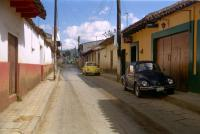
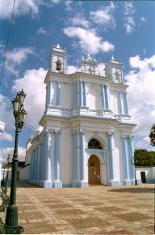
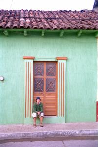

|
Dimanche 18 novembre
C'est vrai que le climat n'est pas aussi chaud que dans le Yucatan. On supporte
facilement pantalon et petite laine. Mais la journée est ensoleillée malgré
les quelques nuages qui apparaissent en fin d'après-midi. Et puis la ville est
vraiment belle. Au centre, la fameuse place, le zocalo. Autour, les rues touristiques.
Dans tout ce secteur, des restos, des hôtels (dont certains très classes), des
boutiques de vêtements, d'artisanat et de bijoux, des cafés, des cafés internet,
etc. Le tout reste assez plaisant, peut-être est-ce pénible en pleine saison.
Sur la place et dans ces rues déambulent un tas de vendeurs. Tous indiens.
Indiennes plus exactement. Il y a aussi beaucoup de gamins. Ils proposent tous
les mêmes articles, bracelets, statuettes, gants, étuis à lunettes, chapeaux,
couvertures, ponchos, etc. Pour la liste complète, il suffit de demander à Marion
qui a tout acheté. La "technique de vente" est un peu insolite. Une dame arrive
et répète inlassablement "compramelo", achète le moi. Q'on en achète ou pas,
une dame puis une autre puis des gamins rappliquent. Très vite, 5 ou 6 indiens
entourent le touriste gringo. Et puis, ils disparaissent au bout de 20 secondes,
sans dire un mot, si on refuse d'acheter. Un peu lourd, mais on voit bien qu'ils
en ont besoin, alors Marion a bien raison d'acheter. En plus, c'est joli et
de temps en temps, on réussi à discuter un peu avec un gamin ou une dame et
quelques fois on a même droit à un sourire sur ces visages qui ont l'air si
tristes en général. Il y a aussi les gamins qui nous demandent sans arrêt "escribe
tu nombre", d'écrire nos noms, prénoms, nationalité sur un papier et... la somme
que l'on désire donner à l'oeuvre de bienfaisance de son école. Mais le papier
n'a rien d'officiel, et les premiers noms de la listes écrits au crayon de papier
dans un vieux cahier de brouillon semblent bien avoir été écrits par le gamin
lui-même ou par un proche. Cela nous rappelle tristement Pokhara au Népal. En
tous cas, ça marche, on a vu un grand type blond filer 20 pesos à un gamin.
Dans un pays où les serveurs, par exemple, ne fonctionnent qu'au pourboir ou
alors sont payés au maximum 1000 pesos par mois et où un chapeau au crochet,
donc réclamant beaucoup de travail, coûte 20 pesos pour un gringo...
Bref, on se balade dans ces rues charmantes. La ville est plus basse encore
que Merida. La maison rez-de-chaussée est pratiquement le seul modèle connu.
Les couleurs y sont plus vives aussi, on passe de la maison jaune aux encadrures
bleues à une maison verte puis à une autre toute orange. Mais les couleurs sont
gaies sans être agressives et ça contribue à réchauffer l'air un peu froid.
Le soir, on mange au Salsa Verde des tacos poulet, chorizo, boeuf et al pastor
(une viande qui cuit comme celle des kebabs) et un "especial", un mélange savant
de plein de viandes, tomates, poivrons. Sauce piquante, radis, oignons et bière
pour accompagner le tout. On a le ventre tellement plein que la petite balade
nocturne pour rejoindre notre hôtel ne réussit pas complètement à nous faire
digérer tout cela. Mais c'est tellement bon!
Lundi 19 novembre
Hier, on a marché jusqu'au marché. Il vaut le coup d'oeil. Il est géant et
on ne sait pas trop comment s'y repérer une fois plongés dedans. On traverse
d'abord le coin des fruits et légumes. Il me faut baisser la tête sous les toiles
tendues qui servent de pare-soleil et qui se rejoignent de part et d'autre au
milieu des allées. Elles sont à la taille des habitants du coin... Soit environ
1m50! Aucun endroit où marcher la tête redressée.
Les étals de fruits et de légumes sont vraiment géniaux. De véritables oeuvres
d'art! Les pommes, les oranges, les tomates, les mandarines, les avocats, tout
est disposé en forme de pyramide dans des seaux colorés. Pas besoin de peser,
les petits sont à 5 pesos, les grands à 10. C'est pratique en plus d'être joli.
Petit arrêt jus d'orange pressées juste devant nous. Ensuite, c'est le coin
des fleurs, puis vient celui de la mercerie et accessoires. Au centre (on suppose),
un bâtiment abrite les étals de viande et de poissons. En passant, on rencontre
plusieurs vendeurs de maïs et de haricots rouges, noirs, verts, blancs, tout
écossés. Ils sont rangés par couleur dans des casiers juxtaposés les uns aus
autres, on croirait des mosaïques. Là aussi, c'est de l'art! Et pas du lard
bien qu'on soit au marché...
Matinée tranquille. Ecriture, lecture, internet. On n'a plus rien écrit depuis
le 10 novembre, un sacré retard! A midi, on mange près du marché artisanal un
caldo de pollo, un excellent bouillon de poule avec du poulet et des légumes
dedans et un steack à la mexicaine bien relevé. Avec bien sûr un tas de tortillas,
ces sortes de crêpes molles de maïs dont on se sert pour faire des "rouleaux"
de poulet ou viande assaisonnés. L'après midi, on monte tout en haut de la ville
que deux églises surplombent. On tombe sur la sortie d'un enterrement. Plein
de dames en noir et une dozaine de mariachis tout de blancs vêtus accompagnent
en musique le cercueil qui descend les escaliers raides... Le soir, un resto
tenu par deux dames charmantes. Tout simple, pas de chichis, que des tacos,
mais d'excellents tacos. Il n'est ouvert que le soir et rempli de gens du coin,
c'est bon signe en général.
Suite du voyage : San Juan de Chamula
|

Mexique
San Cristobal De Las Casas
|

Mexique
San Cristobal De Las Casas
|
Mexique
San Cristobal De Las Casas
|

Mexique
San Cristobal De Las Casas
|
|
|